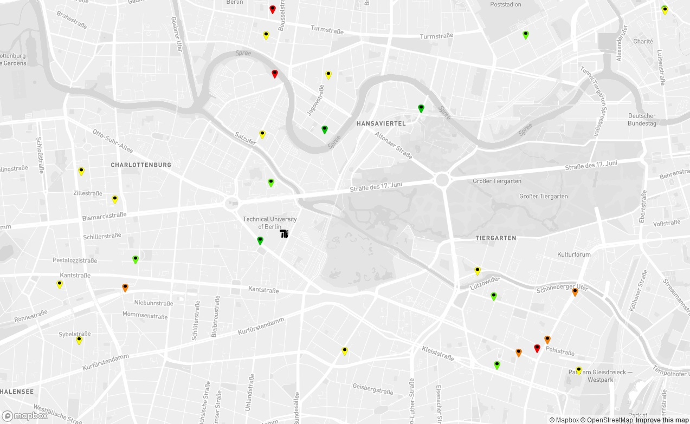

---

title: NO2 - Atlas Berlin
layout: default
bodyid: start
---

<!-- Featured -->
		<div class="wrapper style2">
			
				<section class="container">


					<div style="margin: auto; border: 2px solid red; border-radius: 15px">
						<h3 style="color: red">Aktuelle Infos zur Sammlerrückgabe:</h3>
						<p style="width: auto;" >
							Aufgrund der momentanen Situation hinsichtlich des Coronavirus ist das NO2-Atlas Büro derzeit nur unregelmäßig besetzt. 
							Weitere Informationen erhalten Sie <a href="/2020/03/18/corona.html">hier</a>.
						</p>
					</div>
					<br>

						<p></p>

					<header class="major">
						<h2>BerlinAir NO2-Atlas</h2>
						<span class="byline">Ein Citizen Science Projekt</span>
					</header>
					<div class="row no-collapse-1">
						<section class="4u">
							<a href="/mitmachen/mitmachen.html" class="image feature"></a>
							<p>
									Mit diesen Röhrchen können Sie ganz einfach NO2-Proben in Ihrer Umgebung sammeln, die anschließend vom NO2-Atlas Team ausgewertet werden. Wie genau sie sich am Projekt beteiligen können, erfahren Sie <a href="./mitmachen/mitmachen-passiv.html">hier</a>.
							</p>
						</section>
						<section class="4u">
							<a href="http://karte.no2-atlas.de" class="image feature"></a>
							<p>
								Einige Messergebnisse haben wir schon: auf der <a href="http://karte.no2-atlas.de">Karte</a> können sie angesehen werden.
							</p>
						</section>
						<section class="4u">
							<a href="" class="image feature"><video type='video/mp4' controls class="blogpic" src="http://videos.no2-atlas.de/video_einfuehrung_neu.mp4">Video</video></a>
							<p>Dieses Video erklärt, worum es im Projekt "BerlinAir NO2-Atlas" geht.</p>
						</section>

						<section>
							Der BerlinAIR NO2-Atlas ist ein Citizen Science Projekt des Fachgebiets Umweltchemie und Luftreinhaltung an der Technischen Universität Berlin. Mit Ihrer Unterstützung soll ein berlinweites Netzwerk an NO2-Daten generiert werden. Dies soll dazu beitragen, Informationen über die Verteilung der NO2-Konzentrationen in Berlin und die Belastungssituation betroffener Bürger*innen zu gewinnen. Vielen Dank für Ihre Mitarbeit!
						</section>
					</div>
				</section>
				

			</div>

